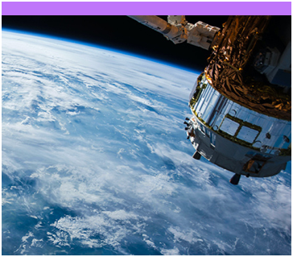

Temas Dies
Comunidad Virtual
Es una plataforma web que facilita el intercambio de información, promueve sinergias y fortalece las capacidades de los interesados nacionales y territoriales sobre la infraestructura vial regional.
Ir a Comunidad Virtual

Ir a Comunidad Virtual
Imágenes Satelitales
El proyecto consiste en aplicar inteligencia artificial para la identificación satelital georeferenciada de la red vial terciaria en el territorio nacional.
Ir a Comunidad Virtual